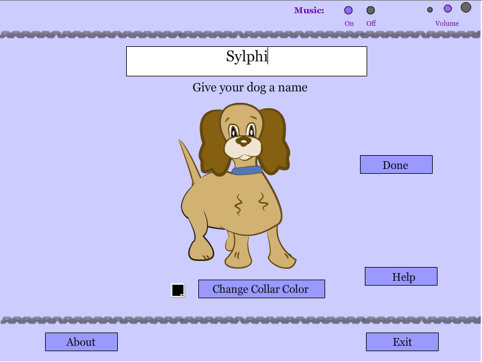

Canine College
Flash Authoring | Dr. Joi Moore | Spring 2012
View Project | View Design Plan | View Evaluation Report
Artifact Description
Canine College is an interactive application developed with Adobe Illustrator, Flash Professional CS5, and Actionscript3. It incorporates elements such as music, sound effects, text fields, a color picker, and timers to teach users the fundamentals of reward-based dog training. The app gives text and video-based instructions on the process for teaching a dog how to sit, lay down, and speak; after that, the module allows the user to "adopt" a dog (along with customizing the dog by giving it a name and changing its collar color) and practice these training fundamentals.The adoptable dog was created as vector art in Illustrator before being imported into Flash for animation.
Artifact's Intended Purpose
The application is designed to instruct users in teaching a dog to sit, lay down, and speak, and these fundamentals can be applied to teaching a dog almost any skill. After giving the user step-by-step instructions for each of the three skills, the application provides a video (which I recorded myself) in which I demonstrate the training process with my cocker spaniel, Sylphi. After the user "adopts" a dog, they can practice the skills further; however, the main purpose of that section is to demonstrate to the user, through the use of a timer, how quickly they must reward the dog for performing a trick. As I explain in the video, if you don't reward the dog within a second or two for successfully performing a trick, the dog might believe that they're being rewarded for a different behavior -- the Flash application is meant to demonstrate how little time the user actually has to reward a dog.

Software/programming languages used
How does it demonstrate mastery of the competency?
In order to successfully create this application with Flash Professional, I had to hand-code quite a few different features using the Actionscript 3 programming language. Aside from all the coding involved in interface creation, including elements such as volume control, I had to write functions for form validation, a colorpicker, a timer, drag-and-drop boxes, motion tweening, and sound effects. This was one of my first major programming projects, and it was a good way for me to learn skills such as code management and object-oriented programming.
Role in project
Canine College was an individual project. I was responsible for all content creation, graphic design, animation, and programming.
Process
- Project proposal
- Content creation
- Graphic design work completed
- Vector animation in Flash
- Usability testing
- Project submitted
Reflection
Aside from some basic work in Javascript and IDE-assisted VB.NET programming, this project was my first experience with extensive, object-oriented programming by hand. It solidified many programming concepts that I had previously struggled with, including strings, arrays, functions, etc., and even though I haven't used Flash at all since the course ended, I was able to transfer many of the concepts and skills I learned to other programming languages I now work with, like PHP and Ruby.
If I were to go back and build this application again, or improve it, I probably wouldn't use Flash; a big part of my work as a developer is ensuring a high standard of accessibility, and unfortunately Flash does not work on most current mobile devices. That being said, I found Actionscript easy to work with language, and enhancing my graphic design skills through the use of vectors and animation was an excellent challenge.